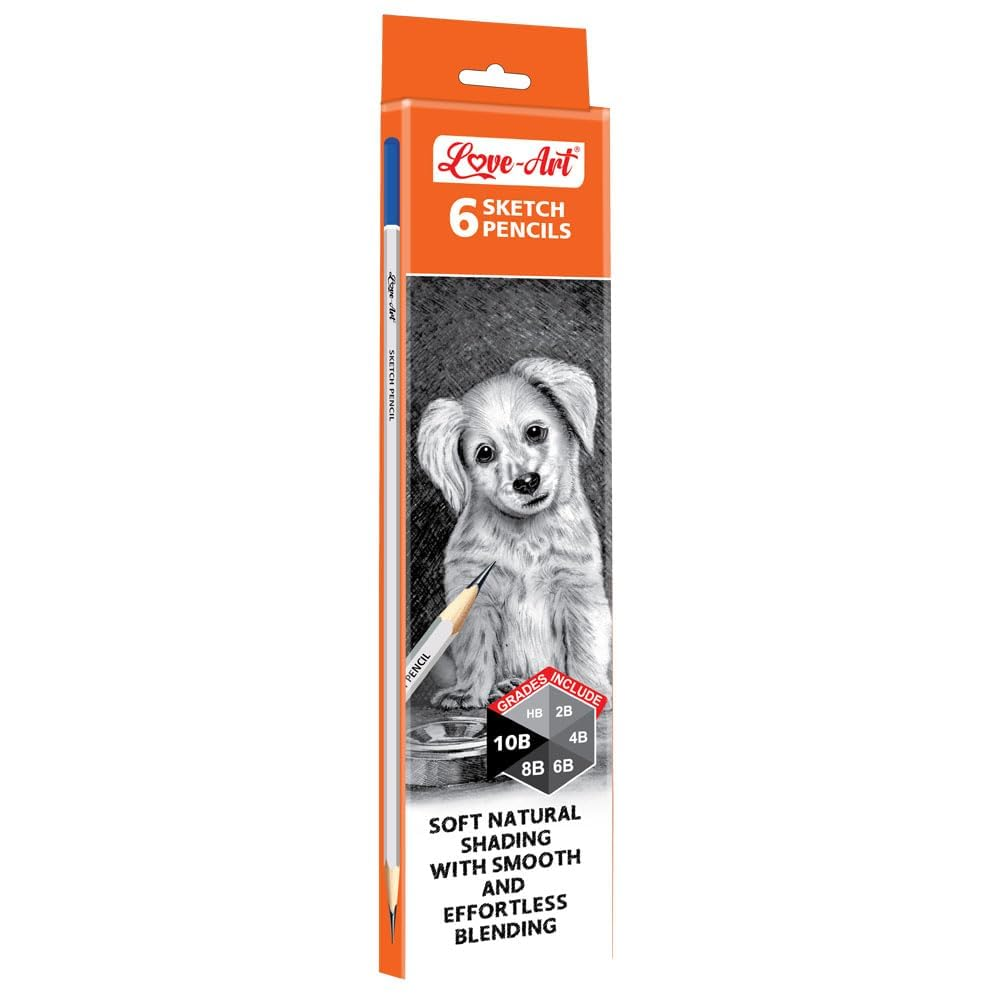
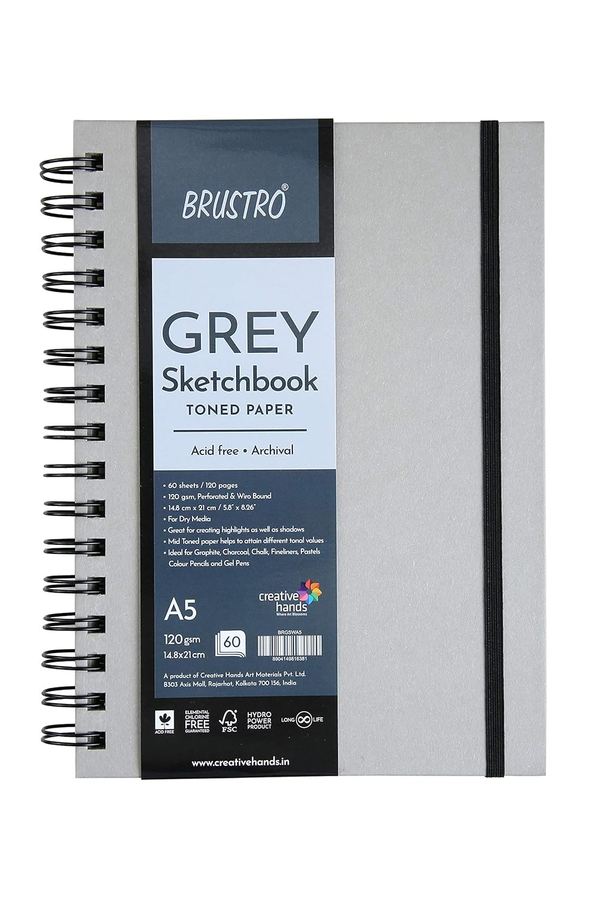

My Art Supplies
Some of the tools and materials I use for drawing and creating artwork.

Brustro Colored Pencils
Colored pencils suitable for layering, blending and detailed artwork.
View on Amazon →
Derwent Colored Pencils
A versatile choice for detailed colored pencil illustrations.
View on Amazon →
Graphite Pencils
Useful for sketching, shading and realistic pencil portraits.
Find Pencils →
Sketchbook
A good sketchbook is perfect for practicing ideas and techniques.
Find Sketchbooks →